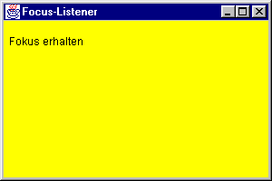

Der Fokus zeigt an, welches Fenster die Tastatureingaben erhält.
Sind mehrere Fenster gleichzeitig geöffnet, so kann immer nur
eines von ihnen den Fokus beanspruchen. Sind auf einem aktiven Fenster
mehrere Dialogelemente aktiv, so kann ebenfalls nur eines davon den
Fokus erhalten, denn jedes Dialogelement wird ebenfalls durch ein
(meist unsichtbares) Fenster dargestellt.
Ein Empfänger für Focus-Events muss das Interface FocusListener
implementieren und bekommt Events des Typs FocusEvent
übergeben. FocusEvent
erweitert die Klasse ComponentEvent
und stellt neben getID
und getSource
die Methode isTemporary
zur Verfügung, die anzeigt, ob der Fokuswechsel temporär
oder permanent ist:
Die Registrierung von Focus-Events erfolgt mit der Methode addFocusListener,
die auf allen Objekten des Typs Component
oder daraus abgeleiteten Objekten zur Verfügung steht:
Das Interface FocusListener
enthält lediglich zwei unterschiedliche Methoden:
focusGained
wird aufgerufen, wenn die Komponente den Fokus erhält, und focusLost,
wenn sie ihn wieder abgibt. Eine Komponente erhält den Fokus
beispielsweise, wenn sie mit der Maus angeklickt oder (unter Windows)
mit Hilfe der Tasten [TAB] oder
[UMSCHALT]+[TAB]
oder über einen Beschleuniger angesprungen wurde. Außerdem
gibt es die Möglichkeit, den Fokus programmgesteuert zu verändern.
Dazu gibt es die Methode requestFocusInWindow
der Klasse Component,
mit der eine Komponente den Fokus für sich selbst beanspruchen
bzw. ihn einer anderen Komponente zuweisen kann:
Die ältere Methode requestFocus
sollte gemäß API-Dokumentation möglichst nicht mehr
verwendet werden, weil sie plattformabhängig implementiert ist.
Das folgende Programm zeigt die Anwendung eines FocusListener-Interface
zur Implementierung der Methoden focusGained
und focusLost
auf einem Frame-Objekt.
Wenn das Fenster den Eingabefokus erhält, wird der Hintergrund
gelb und gibt die Meldung »Fokus erhalten« aus. Verliert
das Fenster den Fokus, so wird der Hintergrund grau und die Meldung
»Kein Fokus« wird angezeigt. Die Registrierung des Fokusempfänger-Objekts
erfolgt durch Aufruf von addFocusListener(this),
bei dem das Fensterobjekt sich selbst als Empfänger registriert:
001 /* Listing2905.java */
002
003 import java.awt.*;
004 import java.awt.event.*;
005
006 public class Listing2905
007 extends Frame
008 implements FocusListener
009 {
010 boolean havefocus = false;
011
012 public static void main(String[] args)
013 {
014 Listing2905 wnd = new Listing2905();
015 }
016
017 public Listing2905()
018 {
019 super("Focus-Listener");
020 addFocusListener(this);
021 addWindowListener(new WindowClosingAdapter(true));
022 setBackground(Color.lightGray);
023 setSize(300,200);
024 setLocation(200,100);
025 setVisible(true);
026 }
027
028 public void paint(Graphics g)
029 {
030 if (havefocus) {
031 g.setColor(Color.black);
032 g.drawString("Fokus erhalten",10,50);
033 } else {
034 g.setColor(Color.darkGray);
035 g.drawString("Kein Fokus",10,50);
036 }
037 }
038
039 public void focusGained(FocusEvent event)
040 {
041 havefocus = true;
042 setBackground(Color.yellow);
043 repaint();
044 }
045
046 public void focusLost(FocusEvent event)
047 {
048 havefocus = false;
049 setBackground(Color.lightGray);
050 repaint();
051 }
052 }
|
Listing2905.java |
Listing 29.5: Behandlung von Fokus-Ereignissen
Die Ausgabe des Programms (nachdem es den Fokus erhalten hat) ist:

Abbildung 29.4: Programm nach Erhalt des Eingabefokus